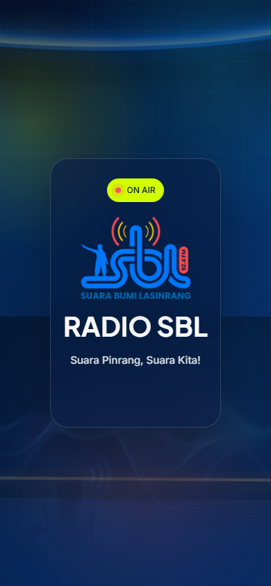
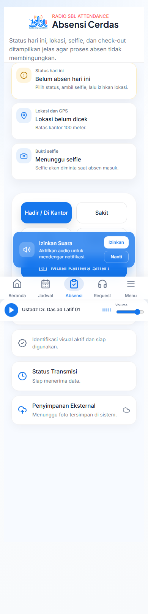
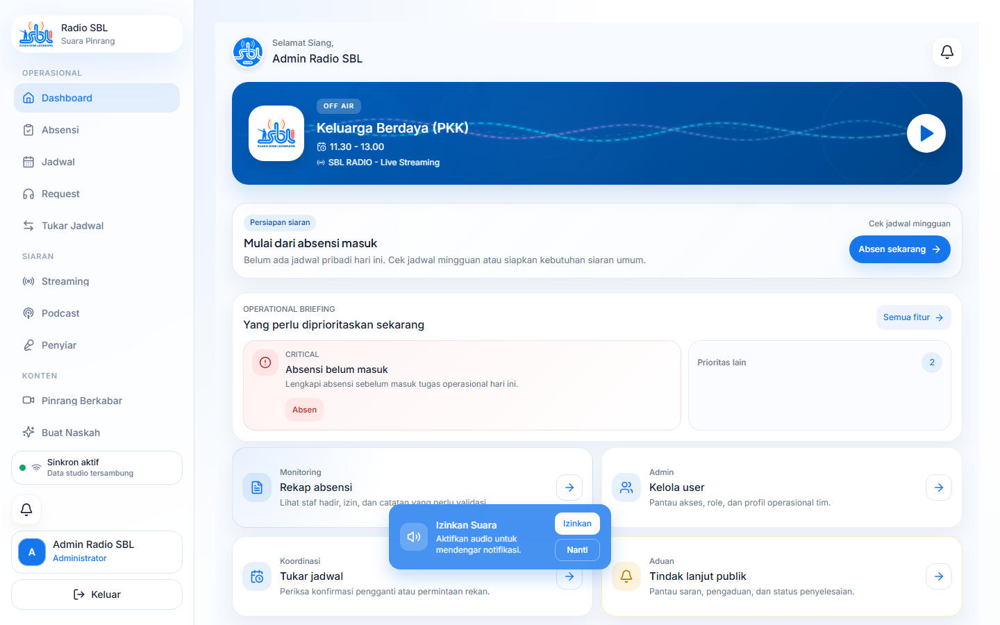
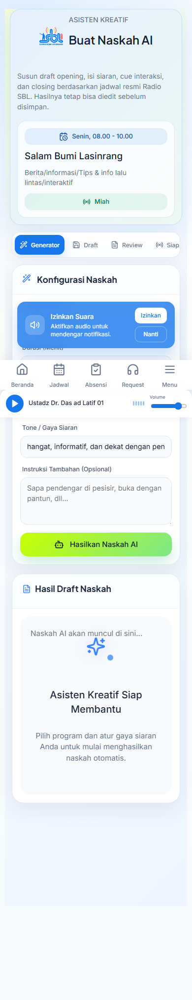
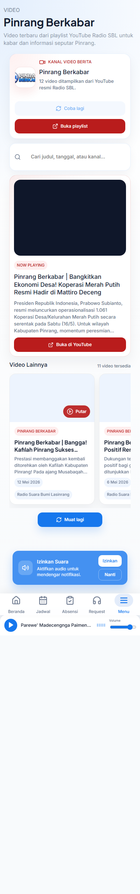
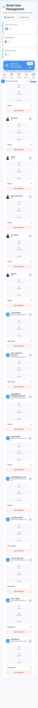
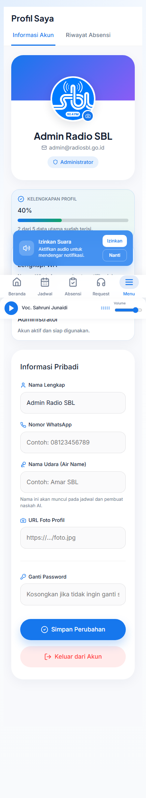

1. Login & Autentikasi
Untuk masuk ke aplikasi Radio SBL, Anda tidak perlu repot menghafal *password*. Sistem kami terintegrasi penuh dengan Single Sign-On (SSO) Google.
- Buka alamat aplikasi di browser Chrome atau Safari Anda.
- Tekan tombol biru besar Masuk dengan Google.
- Pilih akun Google Anda. Jika Anda baru pertama kali masuk, Anda akan masuk dengan status Tamu sampai Admin mengaitkan email Anda ke profil Penyiar.
- Setelah berhasil, Anda akan diarahkan otomatis ke Dashboard Utama.

2. Absensi Berbasis Radius (Geofencing)

Absensi tidak lagi dilakukan secara manual di kertas. Radio SBL menggunakan sistem lacak kordinat (GPS) untuk memastikan kehadiran Anda.
Penting
Izinkan akses Lokasi/Kamera pada peramban web (browser) saat pertama kali masuk ke menu Absensi.
- Buka menu Absensi.
- Sistem akan mendeteksi jarak Anda. Jika indikator menunjukkan warna Hijau (Di Dalam Radius), Anda siap absen.
- Klik tombol Ambil Foto Selfie. Wajah Anda wajib terlihat jelas.
- Klik Absen Masuk. Waktu kedatangan Anda akan otomatis terkirim ke Laporan Admin.
3. Memahami Dashboard & Menu
Dashboard didesain khusus agar berfungsi ganda sebagai monitor operasional (*orientation page*). Saat Anda membuka aplikasi, widget pintar langsung menyoroti agenda penting hari itu tanpa Anda harus mencarinya.

Live Monitor
Menampilkan penyiar dan program yang sedang On-Air detik ini. Terhubung otomatis dengan jadwal resmi stasiun.
Navigasi Sentral
Gunakan *Menu Lengkap* (ikon grid di sudut kanan bawah) untuk mengakses fitur seperti Pinrang Berkabar, Manajemen User, atau Laporan.
4. Kalender Siaran & Tukar Jadwal
Setiap slot program disusun rapi berdasarkan hari. Jadwal siaran Anda akan disorot secara otomatis agar tidak terlewat.
Sistem Tukar Jadwal (Swap)
- Pilih jadwal Anda pada menu Tukar Jadwal.
- Pilih rekan pengganti dari daftar dropdown penyiar aktif.
- Isi alasan rasional (contoh: Menghadiri acara keluarga mendadak).
- Rekan pengganti dan Admin (PD) wajib menyetujui pengajuan tersebut sebelum jadwal resmi diubah oleh sistem.

5. Smart Script Studio (Generasi AI)
Masa Depan Penulisan Naskah Radio
Fitur unggulan Super App Radio SBL adalah integrasi kecerdasan buatan dari Google (Gemini AI). Anda cukup memberikan instruksi satu kalimat, dan AI akan meracik naskah siaran *(script)* lengkap dengan penanda jeda (*cue*).
"Buatkan naskah opening untuk program Aga Kareba edisi bahas kuliner malam di Pinrang. Nada bicara santai dan ceria."
"Halo pendengar SBL FM! Malam ini udara cukup dingin ya. Bicara soal malam di Pinrang, ada satu kuliner yang tidak boleh kita lewatkan..."

Cara Menggunakan Teleprompter:
- Klik ikon Monitor di panel editor atas untuk membuka mode pembacaan penuh (*Teleprompter*).
- Tekan Play agar teks bergulir ke bawah otomatis.
- Gunakan tombol kecepatan (1.2x, 1.5x) untuk menyesuaikan ritme baca Anda.
6. Manajemen Request Lagu

Semua *request* (permintaan) dari pendengar yang masuk melalui platform eksternal atau di-*input* manual oleh admin akan bermuara di layar ini. Data muncul secara realtime tanpa perlu memuat ulang halaman (refresh).
New (Baru Masuk)
Pesan belum dibaca oleh penyiar.
Queued (Diantrekan)
Sudah dimasukkan ke playlist RadioBOSS oleh operator.
Played (Selesai Diputarkan)
Anda menandai request selesai dengan tombol centang.
Modul Redaksi: Pinrang Berkabar
Modul ini khusus digunakan oleh Tim Redaksi/Berita untuk mempublikasikan video jurnalistik, podcast, maupun konten citizen journalism ke website portal resmi Radio SBL.
Tata Cara Unggah & Publikasi
- Salin URL YouTube dari liputan terbaru Radio SBL.
- Gunakan sistem "Sinkronisasi Otomatis". Aplikasi akan mengambil Judul, Deskripsi, dan Gambar Pratinjau (Thumbnail) secara mandiri dari server YouTube.
- Pilih kategori jurnalistik yang sesuai (misal: Hukum & Kriminal, Budaya, Pemerintahan).

Admin: Manajemen Pengguna

Pusat kendali akses aplikasi. Halaman ini HANYA terbuka bagi pengguna dengan status Super Admin.
Kapabilitas Admin
- Melihat status keaktifan seluruh akun (Aktif/Diblokir).
- Bypass Sinkronisasi: Mengatur Role (Penyiar, Reporter, Tamu) untuk setiap akun SSO Google yang baru masuk tanpa campur tangan teknis (IT).
- Sistem proteksi: Super Admin yang sedang login tidak dapat men-downgrade jabatannya sendiri demi menghindari "kunci dari dalam".
Profil Kru & Detail Penyiar
Sebagai Penyiar profesional, Anda dituntut memiliki rekam jejak digital dan profil publik yang dapat diakses oleh pendengar.
- Buka halaman Profil Anda (klik foto avatar di kanan atas).
- Lengkapi Air Name (nama siaran/udara) dan nama asli Anda. Sistem sinkronisasi naskah AI akan memanggil Anda berdasarkan nama siaran ini.
- Tautkan tautan akun sosial media Anda (Instagram/Facebook) untuk diintegrasikan ke halaman Profil Penyiar di website publik.

7. Pedoman Pemberitaan Media Siber
Seluruh Reporter, Admin Video (Pinrang Berkabar), dan Kru Redaksi DIWAJIBKAN tunduk pada Standar Operasional Prosedur (SOP) berbasis Peraturan Dewan Pers Nasional Nomor: 1/Peraturan-DP/III/2012.
Verifikasi Jurnalistik
Berita yang merugikan pihak lain harus melalui verifikasi konfirmasi (cover both sides). Pengecualian hanya berlaku pada peristiwa *Breaking News* mendesak asalkan asal-usul informasi dijelaskan.
Konten Buatan Pengguna (UGC)
Kolom komentar *request* atau artikel yang mengandung unsur kebohongan, fitnah, sadis, pencabulan, atau diskriminasi SARA wajib dihapus oleh operator maksimal 2x24 jam.
Hak Jawab & Ralat
Ralat, meralat fakta yang keliru, harus dicantumkan di berita aslinya dan ditautkan (linked) pada naskah klarifikasi.
Hak Cipta Video (Pinrang Berkabar)
Dilarang menggunakan potong video stasiun TV/kanal Youtube lain untuk di-*monetize* kecuali sekadar *fair-use* dengan *watermark* sumber jelas. Korban anak di bawah umur wajib disensor (blur).
8. Troubleshooting & FAQ (Solusi Cepat)
1. Mengapa "Jadwal Siaran" saya kosong/tidak muncul?
Penyebab: Akun Anda berstatus Tamu karena email belum di-link, atau jadwal belum dibuat oleh Admin.
Solusi: Hubungi admin. Jika Anda sudah diverifikasi, coba ubah filter hari pada kalender menjadi "Semua Hari".
2. GPS Absensi terus memerah (Lokasi Tidak Akurat)?
Penyebab: Browser (Chrome/Safari) tidak mendapat izin lokasi presisi tinggi, atau Anda berada di ruangan berdinding tebal.
Solusi: Nyalakan "High Accuracy / Lokasi Presisi" di pengaturan HP, lalu berjalanlah menepi ke jendela/teras studio selama 10 detik, lalu muat ulang (refresh) aplikasi.
3. Teleprompter / Layar Naskah Tiba-tiba Macet?
Solusi: Tekan tombol *Pause* lalu *Play* kembali. Jika masih diam, periksa apakah bar kecepatan (*Speed*) secara tidak sengaja tergeser ke angka 0x. Naikkan menjadi 1.2x.